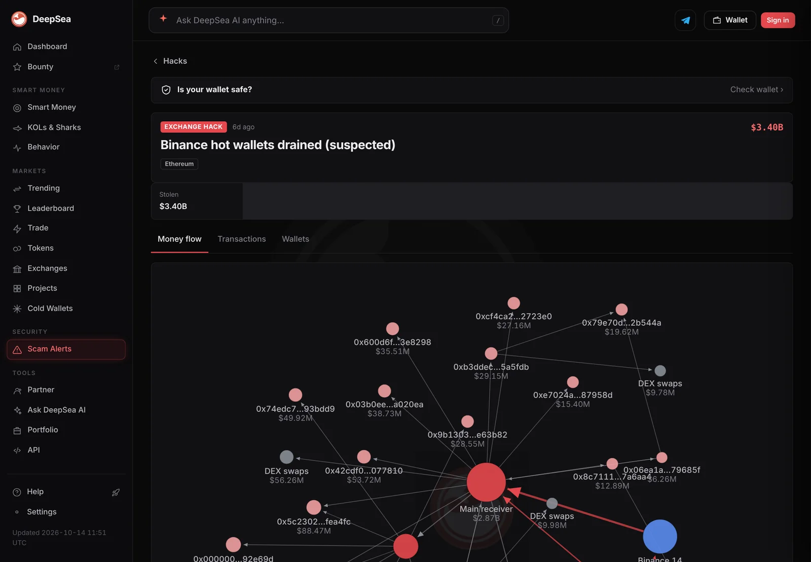

How stolen crypto is traced and frozen, and why thieves dump stablecoins fast
Every blockchain transfer is public, so investigators can follow stolen funds hop by hop. Money can be stopped in two places: stablecoin issuers like Tether and Circle can freeze tokens on-chain, and exchanges can lock accounts when stolen funds arrive.
Key points
- Tracing works because blockchains are public ledgers. Explorers and analytics firms follow funds through wallets, swaps and bridges and label the addresses involved.
- Stablecoin issuers can freeze tokens at an address. Tether says it has frozen more than $5 billion in total and works with more than 340 agencies in 70 countries.
- Coins like bitcoin and ether have no issuer, so they cannot be frozen on-chain. Thieves swap stablecoins into them fast for that reason.
- Exchanges are the other choke point: when stolen funds hit a deposit address, the exchange can freeze the account and share data with police.
 What DeepSea's data shows
What DeepSea's data shows
The Binance case shows both sides of tracing. According to DeepSea, about 1.18 billion USDT and 823 million USDC were frozen in the main receiving wallet within about 40 minutes of the theft. In total, it says issuers froze more than 1.5 billion USDT, about 800 million USDC, 40.5 million RLUSD and 27.8 million USD1.
Speed mattered. About 700 million USDT left two wallets before they were blacklisted, and around 325 million USDT was sold for about 122,300 ETH at a price well above the market. DeepSea says the attacker still controls more than 420,000 ETH and 18,270 BTC, which no issuer can freeze.

Data: DeepSea (desea.io), checked November 2, 2026, 7:59 a.m. ET.
How can stolen crypto be traced at all?
Public blockchains record every transfer: the sending address, the receiving address, the amount and the time. Anyone can read that record through a block explorer such as Etherscan. Names are not attached to addresses, but the money trail is visible.
Investigators start with the addresses that received the stolen funds, then follow each hop. Analytics firms add labels, for example which addresses belong to exchanges, bridges or mixers, so the trail becomes readable. After big hacks, victims often publish the attacker addresses themselves. Bitget's incident page, for instance, lists attacker-controlled addresses on several chains so others can watch and block them.
LC Insight's tracing story on this fall's exchange hacks shows what that looks like in practice: funds split across hundreds or thousands of wallets, swapped and bridged, with only small amounts reaching exchanges so far.
How do stablecoin freezes work?
Stablecoins such as USDT and USDC are issued by companies, and their smart contracts let the issuer block an address. Once frozen, the tokens at that address cannot be moved.
Tether, the largest issuer, publishes its enforcement record. In a September 28, 2026, release it said it had frozen more than $5 billion in total, including more than $2.4 billion connected to US authorities. It said it works with more than 340 law enforcement agencies in 70 countries and has supported more than 2,850 investigations. Tether CEO Paolo Ardoino put it this way: "Financial crime does not become invisible simply because it touches a blockchain."
Freezes usually follow information from authorities. In April 2026, Tether said it froze about $344 million in USDT across two addresses after US authorities shared information linking them to unlawful conduct.
USDT frozen by Tether, cumulative
US$ billion
Sources: Tether, April 23, 2026; Tether, September 28, 2026. Figures are Tether's own lower bounds.

What did freezes catch in the Binance hack?
The October 29, 2026, theft from Binance shows freezes at scale, and their limits. TRM Labs counts about $1.77 billion in USDT frozen by Tether and about $825 million in USDC frozen by Circle, and says Ripple froze the remaining RLUSD after some was sold. DeepSea's tracker, in the box above, gives somewhat different totals. The two sources count freezes in their own ways and at different times (TRM as of 8:30 p.m. ET on October 29, DeepSea as of November 2), so their figures should be read side by side, not added together.
The attacker knew this would happen. TRM says about 325 million USDT was sold to market makers for about 122,300 ETH at a discount of more than 10%, a price worth paying to get out of a freezable token. TRM also says the attacker still holds more than 420,000 ETH and 18,270 BTC, about $2.4 billion, beyond any issuer's reach. LC Insight's Binance coverage has the full timeline.
How do exchanges help stop stolen funds?
Sooner or later, most thieves want cash. That usually means an exchange or an over-the-counter desk, and those businesses run compliance checks. When analytics tools flag a deposit as coming from a hack, the exchange can freeze the account and share records with investigators.
Hacked platforms lean on this. Bitget's incident page offers a bounty of 5% of any amount frozen or recovered with outside help, and says some assets were frozen with the help of other exchanges, projects and security firms.
Sanctions add legal force. When the US Treasury lists crypto addresses, as it did for eight addresses tied to North Korea's IT worker network on October 28, 2026, US exchanges and other US persons must not deal with them.

How do police seize crypto?
Freezing stops funds from moving. Seizure transfers them to the government, usually with a court order. US prosecutors often credit issuers in their announcements. In September 2026, the Justice Department's Scam Center Strike Force said it had restrained more than $52 million in crypto from the Xinbi Guarantee marketplace and its vendors, and thanked Tether for its "proactive assistance in this investigation."
Seized funds may later be returned to victims through forfeiture or restitution, but that takes court proceedings and often years.
What are the limits of tracing?
Tracing shows where money went. It does not show who controls an address, and it does not move funds back. Thieves use that gap. They split funds across many wallets, swap between coins and bridge between chains so each hop has to be followed separately.
Mixers are the classic tool. A mixer pools coins from many users so it is hard to tell which coins left for which address. But a public trail does not expire, and cases can surface years later. In October 2026, a jury convicted the man behind two 2021 attacks on Uranium Finance, who prosecutors said laundered funds through the Tornado Cash mixer. In that case, law enforcement had seized crypto worth about $31 million at the time. Weeks later, the Justice Department announced the extradition of a man charged over a 2022 Nomad Bridge exploit, who allegedly converted the funds into bitcoin and spread them across addresses. He is presumed innocent.
The practical lesson is that tracing works best fast, while funds still sit in freezable tokens, and slowly, through the courts, once they are not.
What can victims do?
Speed matters most when funds are still in a freezable stablecoin or on their way to an exchange. Revoke.cash's guide for victims says stolen assets cannot be recovered on the blockchain itself, but reporting to local authorities and exchanges creates a record and gives a chance of recovery if the thieves are caught.
Useful steps: write down the transaction hashes and addresses, report to police, contact the exchanges where funds landed, and, for stablecoins, alert the issuer and law enforcement. Revoke.cash warns that anyone promising to recover stolen crypto for a fee is likely a scammer.
If your recovery phrase was compromised, treat the wallet as lost. Revoke.cash warns that attackers often run sweeper bots that grab anything sent to a compromised wallet, and advises abandoning those addresses and moving what is left to a fresh wallet with a new recovery phrase.
LC Insight analysis
This section is our reading of the facts above, not a statement of fact.
- We think stablecoin freezes have changed how big hacks play out. Attackers now take a loss to swap out fast, and in the Binance case, freezes caught about 40% of the haul, which would have been impossible with bitcoin alone.
- The real limit is that freezes depend on a few companies' decisions. That power helps victims, but it is also why users should understand that a stablecoin is not a bearer asset in the way bitcoin is.
What's next
- New freezes on the addresses OFAC listed on October 28, 2026
- How much of the parked ether from the Binance and Bitget hacks reaches exchanges
- Court processes to return frozen stablecoins to victims
Frequently asked questions
Can bitcoin be frozen?
Not on-chain. Bitcoin and ether have no issuer that can block an address. They can only be stopped when they reach a company, such as an exchange, that can freeze the account.
Does Tether freeze funds on request from anyone?
Tether's releases describe freezes made in coordination with law enforcement, such as OFAC and the Justice Department. Revoke.cash advises victims to report to local authorities and exchanges first.
Do mixers make crypto untraceable?
They make tracing harder, but not always impossible. Funds that leave a mixer still need a way to cash out, and that is where exchanges can stop them.
Does freezing mean victims get money back?
Not automatically. A freeze stops the funds from moving. Returning them usually requires the issuer, the victim and the courts to agree on a process.
Disclaimer. This article is based on public information and the sources listed below as of the update time shown. It is for information only and is not investment, legal or tax advice. Figures may change as companies and authorities publish new data.
Sources
- Tether, Tether Has Supported Nearly $550 Million in Iran-Linked USDT Freezes (September 28, 2026)
- Tether, Tether Supports Freeze of More Than $344 Million in USDT (April 23, 2026)
- US Attorney's Office, District of Columbia, Scam Center Strike Force seizures from Xinbi marketplace (September 9, 2026)
- TRM Labs, North Korea steals USD 6.36 billion from Binance (accessed November 2, 2026)
- Bitget, Security incident page (last updated October 13, 2026)
- US Justice Department, Israeli national extradited over Nomad Bridge exploit (October 30, 2026)
- US Attorney's Office SDNY, Jonathan Spalletta convicted (October 7, 2026)